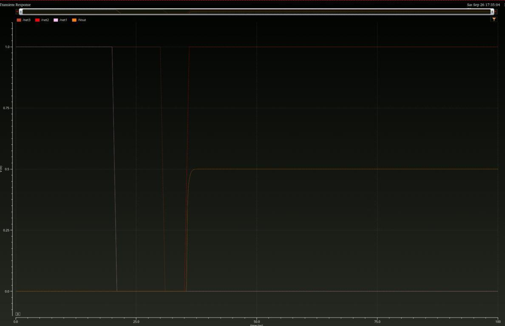
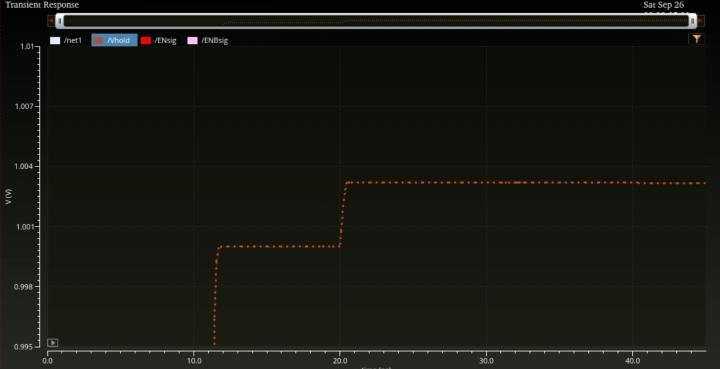
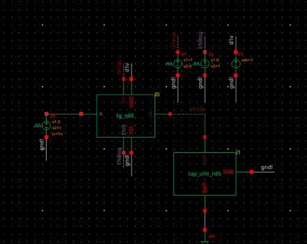
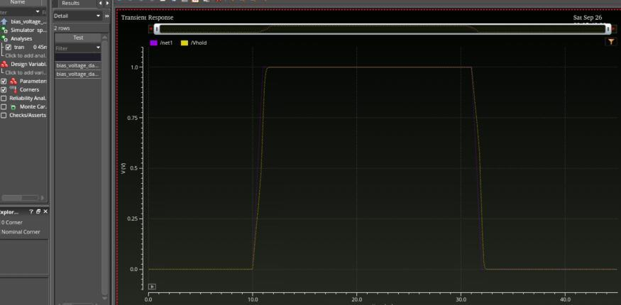

Programmable bias generation
I am developing a programmable bias-voltage DAC in Cadence Virtuoso for adjustment of the operating point of a collaborator-designed ΣΔ modulator. The design work progresses from behavioral transfer-function models to charge redistribution and transistor-level switching experiments.
The current notes document a 3-bit charge-redistribution prototype and standalone CMOS transmission-gate tests. Earlier notes include a 4-bit behavioral transfer model and background reading on cryogenic bias DACs; these are separate from the current 3-bit circuit prototype.
My contribution
I built behavioral models to examine offset, gain error, and linearity, then implemented a binary-weighted charge-redistribution DAC. The Week 5 circuit replaces ideal capacitors with n65 capacitor cells while retaining ideal switching elements for this initial DAC check.

In parallel, I designed and simulated a CMOS transmission gate, comparing transistor sizes and examining how the switch charges a capacitor load. The work also investigates the voltage step associated with turning the switch off.
Current block-level checks
Charge-redistribution DAC
For code 100, the simulated output is 499.996 mV against a 500 mV target. This is a single-code check of the current capacitor-array prototype; it does not establish full-code accuracy for a completed DAC with transistor switches.

Transmission-gate experiment
The standalone test compares a small-device configuration with a larger 1 µm NMOS / 2 µm PMOS configuration at 60 nm channel length. The larger devices improve the illustrated settling behavior. A separate hold experiment shows an approximately 3.2 mV turn-off voltage step.



These tests separate two design concerns: how quickly the load follows the input while the switch is on, and how much its voltage changes when the switch opens. Both need to be considered when replacing the prototype’s ideal switches.
The project remains at block-level design and simulation. Integrating the nonideal switches into the DAC and evaluating the resulting behavior are subsequent steps.
Selected design evidence
The circuit excerpts and transients above document my capacitor-array prototype and standalone switch experiments. They are selected from my design notes; the collaborator’s modulator implementation is outside this page’s scope.